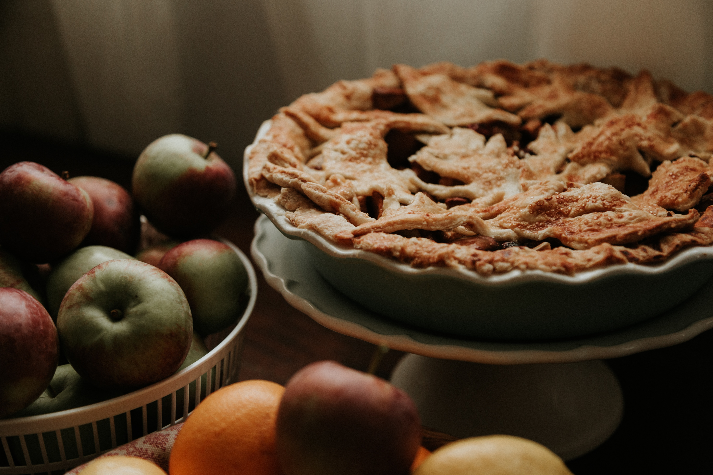

Joe's ham pie is just as delicious at breakfast as it is for lunch and
dinner, its a fast recipe and will guarantee a full belly.
This is what you need:
Ingredients:
- 3 dl wheat flour
- 100 g butter
- 3 tbsp cold water
- 120 g smoked or boiled ham
- 150 g grated cheese
- 3p eggs
- 3 dl whole milk
- 1/2 tea spoon salt
- a pinch of black pepper
- 1/2 tsp paprika powder
For serving
